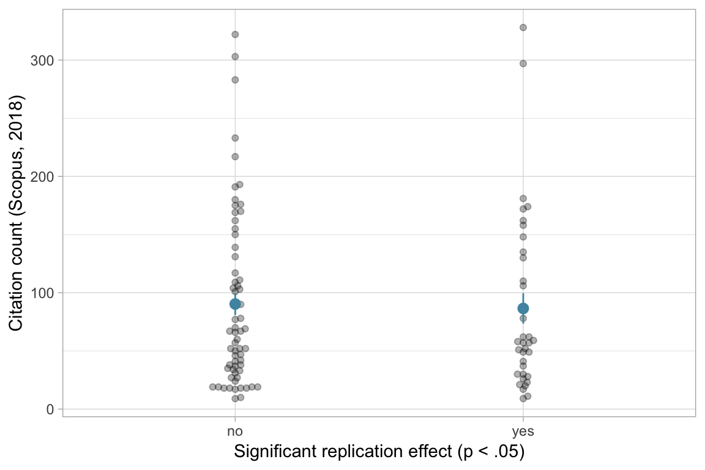
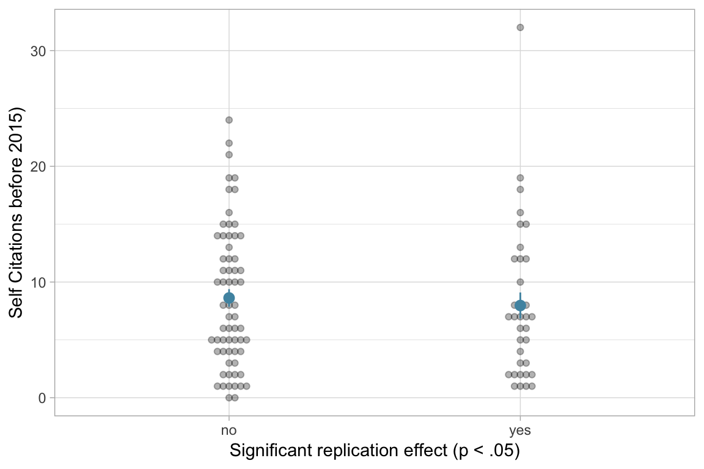
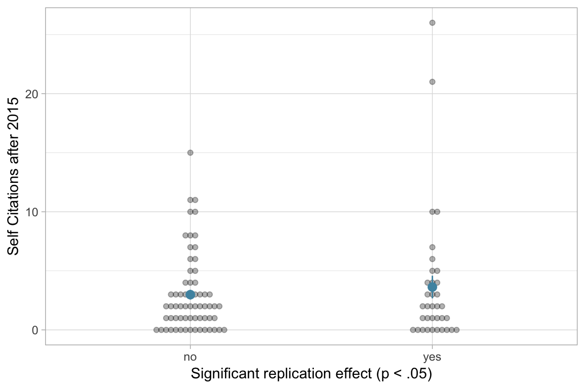

Replication in the Reproducibility Project Psychology and citations
After his talk at the Center for Adaptive Rationality, Stephan Lewandowsky and I had a small discussion whether scientists can actually pick “winners”. The discussion stemmed from a larger discussion about whether we get more research waste, if we replicate first, then publish, or publish first, and then replicate those studies that are found interesting.
If I recall correctly, we didn’t really disagree that scientists can tell if things are off about a study, but we did disagree on whether citation indexes such a quality assessment, and is a useful way to find out which studies are worthy of more attention.
So, I ran the numbers for one of the few studies where we can find out, the Reproducibility Project: Psychology. I tweeted it back then, but felt like making the graphs nicer and playing with radix on a train ride.
We found 167 DOIs, so we had DOIs for all our studies1.
| scopus_pre2015 | scopus_2018 | scopus_post2015 | gscholar_pre2015 | crossref_2018 | mixed_post2015 | |
|---|---|---|---|---|---|---|
| scopus_pre2015 | 1.00 | 0.98 | 0.93 | 0.97 | 0.97 | -0.05 |
| scopus_2018 | 0.98 | 1.00 | 0.98 | 0.97 | 0.98 | 0.04 |
| scopus_post2015 | 0.93 | 0.98 | 1.00 | 0.93 | 0.97 | 0.13 |
| gscholar_pre2015 | 0.97 | 0.97 | 0.93 | 1.00 | 0.97 | -0.15 |
| crossref_2018 | 0.97 | 0.98 | 0.97 | 0.97 | 1.00 | 0.10 |
| mixed_post2015 | -0.05 | 0.04 | 0.13 | -0.15 | 0.10 | 1.00 |
Does replication in the RPP predict how often a paper is cited?
No, not for the citation count recorded in the RPP.

Call:
glm(formula = citations_2015 ~ replicated_p_lt_05, family = quasipoisson(),
data = .)
Deviance Residuals:
Min 1Q Median 3Q Max
-8.331 -4.810 -1.726 3.067 14.583
Coefficients:
Estimate Std. Error t value Pr(>|t|)
(Intercept) 3.93854 0.09962 39.534 <2e-16 ***
replicated_p_lt_05yes -0.08052 0.17203 -0.468 0.641
---
Signif. codes: 0 '***' 0.001 '**' 0.01 '*' 0.05 '.' 0.1 ' ' 1
(Dispersion parameter for quasipoisson family taken to be 32.61327)
Null deviance: 2813.6 on 98 degrees of freedom
Residual deviance: 2806.4 on 97 degrees of freedom
AIC: NA
Number of Fisher Scoring iterations: 5Does replication predict 2018 citation counts?
I used the Crossref API to get DOIs and the Scopus API to get yearly citation counts for the papers contained in the RPP.
Edit: The SCOPUS citation count up to 2015 was highly correlated with the one stored in the dataset (based on Google Scholar). Rank order were also very similar for citations pre and post 2015 using Scopus, CrossRef, or Google Scholar. However, subtracting CrossRef citation counts from Google Scholar counts amplified error (to get citations after the publication of the RPP) - the correlation with the “citations after 2015 (Scopus)” variable was low. Therefore, the revised version of this blog post uses only the Scopus numbers.
Again, there was no association with replication status for 2018 citation counts.

Call:
glm(formula = citations_2018 ~ replicated_p_lt_05, family = quasipoisson(),
data = .)
Deviance Residuals:
Min 1Q Median 3Q Max
-11.005 -6.988 -3.263 4.546 19.781
Coefficients:
Estimate Std. Error t value Pr(>|t|)
(Intercept) 4.50328 0.10635 42.344 <2e-16 ***
replicated_p_lt_05yes -0.04297 0.18138 -0.237 0.813
---
Signif. codes: 0 '***' 0.001 '**' 0.01 '*' 0.05 '.' 0.1 ' ' 1
(Dispersion parameter for quasipoisson family taken to be 65.37293)
Null deviance: 5660.0 on 98 degrees of freedom
Residual deviance: 5656.3 on 97 degrees of freedom
AIC: NA
Number of Fisher Scoring iterations: 5Does replication predict subsequent citation counts (ie. 2015-2018)?
This is pretty dirty work, because I’m subtracting citation counts from one source with another, so most papers are cited less in 2018 than in 2015. But haven’t found a quick way to get citation counts in 2015 from rcrossref. I’ve requested the necessary access to Scopus, where I could check, but Elsevier is being annoying.
Again, no association. So, assuming the dirtiness of the analysis doesn’t matter,
The literature hasn’t reacted at all to the presumably important bit of information that a study doesn’t replicate.

Call:
glm(formula = citations_after_2015 ~ replicated_p_lt_05, family = quasipoisson(),
data = .)
Deviance Residuals:
Min 1Q Median 3Q Max
-7.899 -5.302 -2.963 3.103 13.664
Coefficients:
Estimate Std. Error t value Pr(>|t|)
(Intercept) 3.662760 0.119244 30.717 <2e-16 ***
replicated_p_lt_05yes 0.004458 0.200260 0.022 0.982
---
Signif. codes: 0 '***' 0.001 '**' 0.01 '*' 0.05 '.' 0.1 ' ' 1
(Dispersion parameter for quasipoisson family taken to be 35.46258)
Null deviance: 3101.3 on 98 degrees of freedom
Residual deviance: 3101.3 on 97 degrees of freedom
AIC: NA
Number of Fisher Scoring iterations: 5What about self citations?
The RPP emphasised its own overall result. Hence, some nonreplications of specific studies may have gone unnoticed by researchers in the field. But the study authors hardly have this excuse; they knew whether their study was replicated (probably even prior to 2015, but this is hard to figure out). However, there is also no significant difference in self citation count (before or after 2015) by publication status.

Call:
glm(formula = self_cites_before_2015 ~ replicated_p_lt_05, family = quasipoisson(),
data = .)
Deviance Residuals:
Min 1Q Median 3Q Max
-4.1533 -1.8906 -0.3514 1.3266 6.3949
Coefficients:
Estimate Std. Error t value Pr(>|t|)
(Intercept) 2.15466 0.09269 23.246 <2e-16 ***
replicated_p_lt_05yes -0.07880 0.15997 -0.493 0.623
---
Signif. codes: 0 '***' 0.001 '**' 0.01 '*' 0.05 '.' 0.1 ' ' 1
(Dispersion parameter for quasipoisson family taken to be 4.742497)
Null deviance: 463.83 on 98 degrees of freedom
Residual deviance: 462.67 on 97 degrees of freedom
AIC: NA
Number of Fisher Scoring iterations: 5
Call:
glm(formula = self_cites_after_2015 ~ replicated_p_lt_05, family = quasipoisson(),
data = .)
Deviance Residuals:
Min 1Q Median 3Q Max
-2.6939 -2.0400 -0.6064 0.3752 7.5933
Coefficients:
Estimate Std. Error t value Pr(>|t|)
(Intercept) 1.0934 0.1699 6.437 4.65e-09 ***
replicated_p_lt_05yes 0.1954 0.2688 0.727 0.469
---
Signif. codes: 0 '***' 0.001 '**' 0.01 '*' 0.05 '.' 0.1 ' ' 1
(Dispersion parameter for quasipoisson family taken to be 5.510687)
Null deviance: 429.28 on 98 degrees of freedom
Residual deviance: 426.40 on 97 degrees of freedom
AIC: NA
Number of Fisher Scoring iterations: 6How does pre-2015 citation count predict post-2015 citations accounting for replication status?
A slightly different way of looking at it does not yield different conclusions for me.


Does the association differ by journal?
Hard to tell with this little data!

Call:
glm(formula = citations_2015 ~ Journal * replicated_p_lt_05,
family = quasipoisson(), data = .)
Deviance Residuals:
Min 1Q Median 3Q Max
-8.331 -4.332 -1.445 2.532 12.122
Coefficients:
Estimate Std. Error t value
(Intercept) 3.47197 0.24258 14.313
JournalJPSP 0.64544 0.27814 2.321
JournalPS 0.49518 0.28506 1.737
replicated_p_lt_05yes -0.18759 0.37517 -0.500
JournalJPSP:replicated_p_lt_05yes -0.01447 0.50369 -0.029
JournalPS:replicated_p_lt_05yes 0.36557 0.43739 0.836
Pr(>|t|)
(Intercept) <2e-16 ***
JournalJPSP 0.0225 *
JournalPS 0.0857 .
replicated_p_lt_05yes 0.6182
JournalJPSP:replicated_p_lt_05yes 0.9771
JournalPS:replicated_p_lt_05yes 0.4054
---
Signif. codes: 0 '***' 0.001 '**' 0.01 '*' 0.05 '.' 0.1 ' ' 1
(Dispersion parameter for quasipoisson family taken to be 28.42273)
Null deviance: 2813.6 on 98 degrees of freedom
Residual deviance: 2419.1 on 93 degrees of freedom
AIC: NA
Number of Fisher Scoring iterations: 5Conclusion
So, are citation counts a poor indicator of quality? The most common reaction I received to these results was saying that the 7 years from the publication of the studies to 2015 are probably not enough for citation counts to become more signal than noise, or at least that the 3 years from the publication of the RPP results to 2018 are not enough. These reactions mostly came from people who did not really believe in citations-as-merit before anyway.
To me, if 10 years after publication citations cannot be used to distinguish between studies that replicated and those that didn’t, they’re probably not a useful measure of thoroughness that can be used in assessment, hiring, and so on. They may be a useful measure of other important skills for a scientist, such as communicating their work; they may measure qualities we don’t want in scientists, but it seems they are not useful to select people whose work will replicate. I think that is something we should want to do.
In addition, the literature does not react quickly to the fact that studies do not replicate. Given that people also keep citing retracted studies (albeit with a sharp drop), this does not surprise me. It will be interesting to revisit the data in a few years time and see if researchers picked up on replication status then.
Limitations
These were all studies from reputable journals, so we might have some range restriction here. On the other hand, plenty of these studies don’t replicate, and citation counts go from 0 to >300.
Which studies keep being cited after not being replicated?
Hover your mouse over the dots to see the study titles.
Which authors keep citing their own studies after they do not replicate?
Hover your mouse over the dots to see the study titles.
List of studies
Appendix
These analyses are based on Chris J. Hartgerink’s script. The data and his script can be found on the OSF. Did I get the right DOIs? There are probably still some mismatches. Titles are not exactly equal for 84 studies, but on manual inspection this is only because Crossref separates out the subtitle, and 150 of 167 titles start exactly the same.
Were they they all correct? See Appendix↩